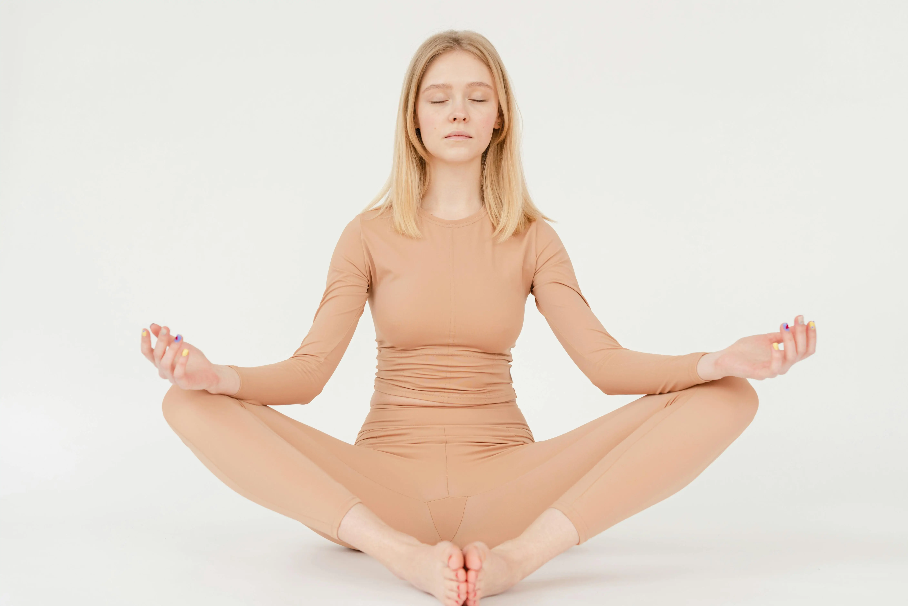

The Importance of Meditation for Our Health
Meditation is a practice that has been utilized for thousands of years to promote mental clarity, emotional stability, and overall well-being. Its importance to our health cannot be overstated, as it offers numerous benefits that enhance both our physical and mental states. Meditation helps reduce stress by calming the mind and lowering levels of cortisol, the stress hormone. This reduction in stress can lead to lower blood pressure, improved cardiovascular health, and a stronger immune system. Furthermore, regular meditation can enhance concentration, increase self-awareness, and promote emotional health by fostering a sense of calm and balance. Mentally, meditation has been shown to reduce symptoms of anxiety and depression. It encourages mindfulness, which can help individuals better understand their thoughts and emotions, leading to improved emotional regulation and resilience. Physically, the practice can also reduce pain and improve sleep quality. By focusing on the breath and bodily sensations, meditation can decrease the perception of pain and encourage relaxation, which is essential for restorative sleep.
Different Techniques of Meditation
There are several meditation techniques, each offering unique approaches to achieving a state of mindfulness and relaxation:
- Mindfulness Meditation:
- Transcendental Meditation (TM):
- Guided Meditation:
- Loving-Kindness Meditation (Metta):
- Body Scan Meditation:
- Zen Meditation (Zazen):
This technique involves paying attention to the present moment without judgment. Practitioners focus on their breath, bodily sensations, or surroundings to cultivate awareness and acceptance.
TM involves the use of a mantra—a specific word or phrase—that is silently repeated to help the mind settle into a state of deep relaxation and rest.
This type involves listening to a guide or instructor who leads the practitioner through a visualization or series of instructions designed to promote relaxation and focus.
This practice involves generating feelings of compassion and love towards oneself and others. Practitioners repeat phrases like "May I be happy, may I be healthy," gradually extending these wishes to others.
This technique involves systematically focusing on different parts of the body, usually starting from the toes and moving up to the head, to promote relaxation and body awareness.
Originating from Buddhist tradition, Zazen involves sitting in a specific posture and focusing on the breath and observing thoughts without attachment or judgment.